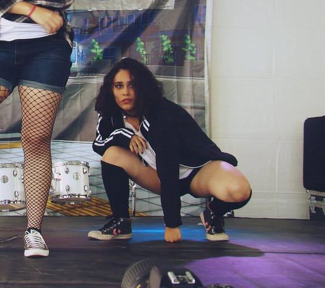

Dançarina
Iniciei minha jornada na Dança em 2015 realizando covers de grupos de K-Pop. Nessa época fazia parte de um grupo onde era líder chamado RESPECT! O grupo existiu até meados de 2016, onde ele se desfez e eu fiz audição para uma companhia de dança aqui de Belo Horizonte, onde eu nasci e moro (Mineirinha uai). Passei na audição no N-TAG e lá comecei a aprender mais sobre Danças Urbanas e foi onde me apaixonei! Durante essa caminhada fiz diversas aulas e participei de vários eventos, alguns que me levaram para fora de BH! Partcipo desde 2018 do Projeto Anjos d' Rua e recentemente (2021) entrei para o grupo SoulGuetto. Sonho com um dia ter uma vida profissional na dança, mas por enquanto sou só uma aluna.
Outros Hobbies
Além do que já viram eu possuo outros hobbies dos qual amo de mais, que são cozinhar e tirar fotos! Em relação a culinária gosto de me aventurar e testo várias receitas, tanto doces quanto salgadas, Junto com minha mãe na cozinha não dá outra! Já em relação a fotografia é uma coisa que eu não sei de ordem sugiu, mas agradeço por ter acontecido! Gosto muito da natureza, paisagens e amo observá-las, senti-las. Tirar fotos de paisagens e locais é um forma de eu guardar esses momentos comigo!